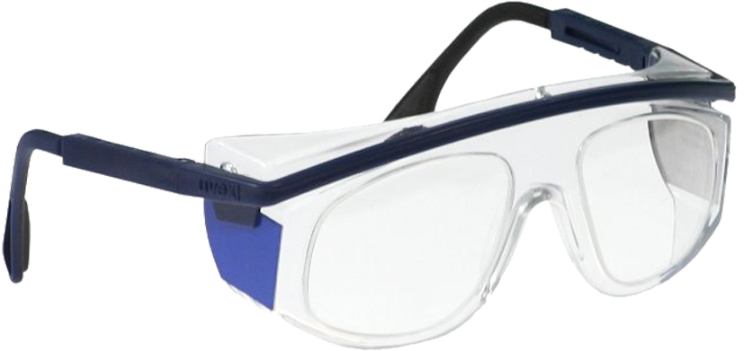

LENTES PLOMADOS
TIPO GOGGLE
Sin proteccion lateral

DESCRIPCIÓN:
Lentes plomados tipo goggle, construido de propionato resistente al impacto, brinda protección frontal equivalente a 0.75 milímetros de plomo, la longitud de las “varillas” puede variarse, así como el ángulo de el armazón con respecto a las “varillas”. Armazón plástica transparente, “varillas” y soporte en color azul rey, peso aprox. 90 gramos.
DATOS COMPLEMENTARIOS: Para mayor información comunicarse a:

Tel./Fax: (55) 5538-8690
Lada sin costo: 01 800-045-2772
e-mail: ventas@arsamx.com
www.arsamx.com